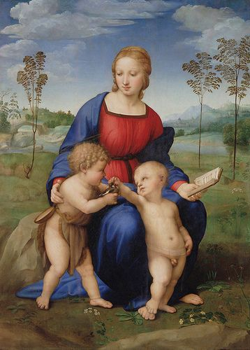
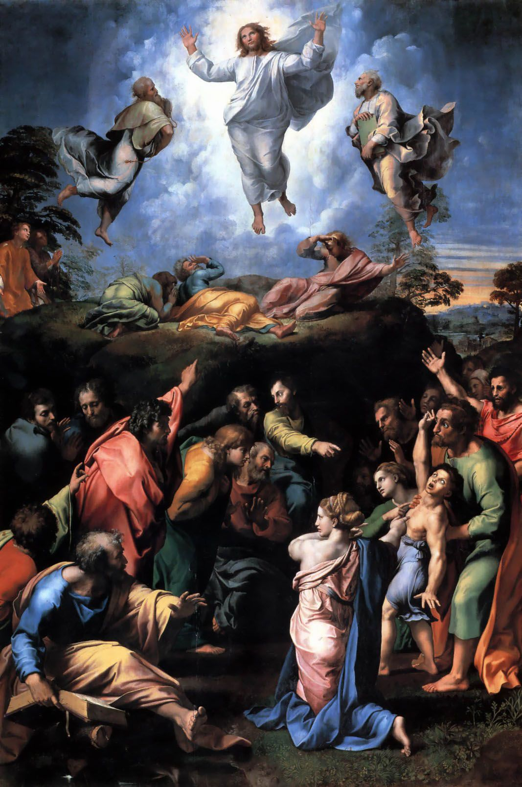
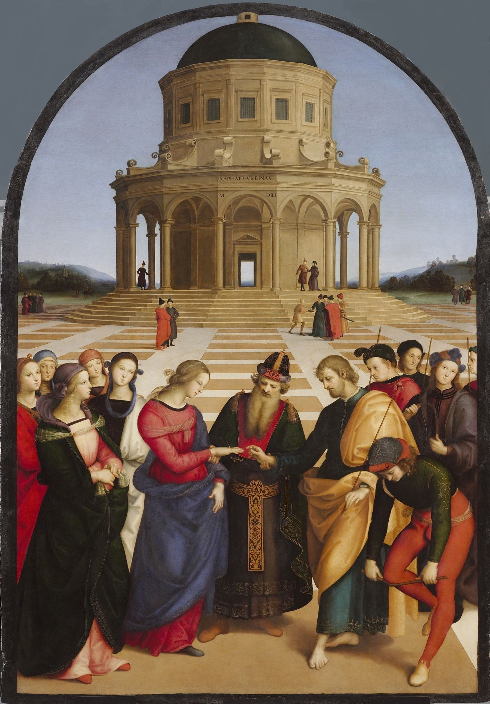
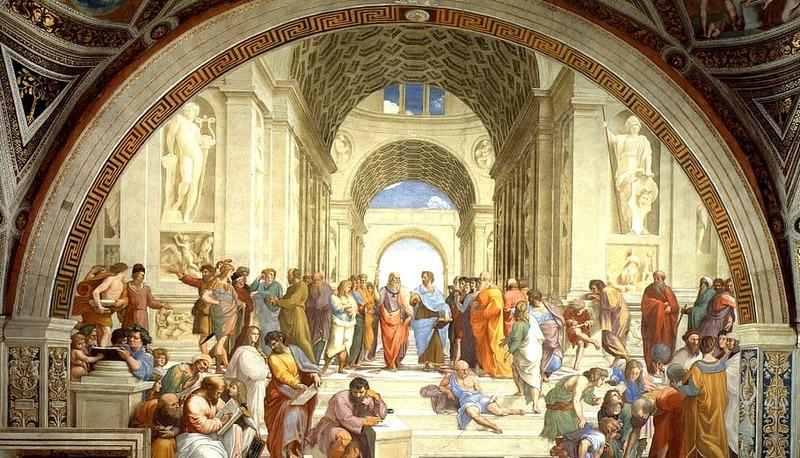
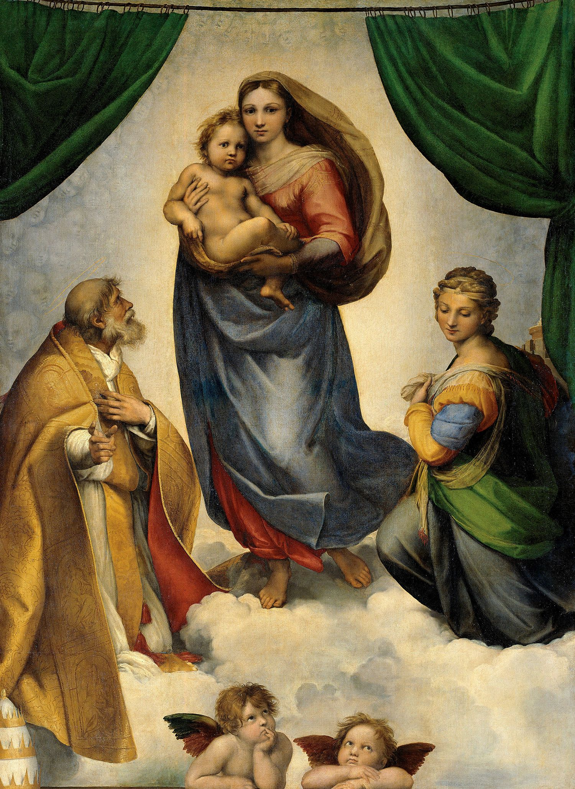
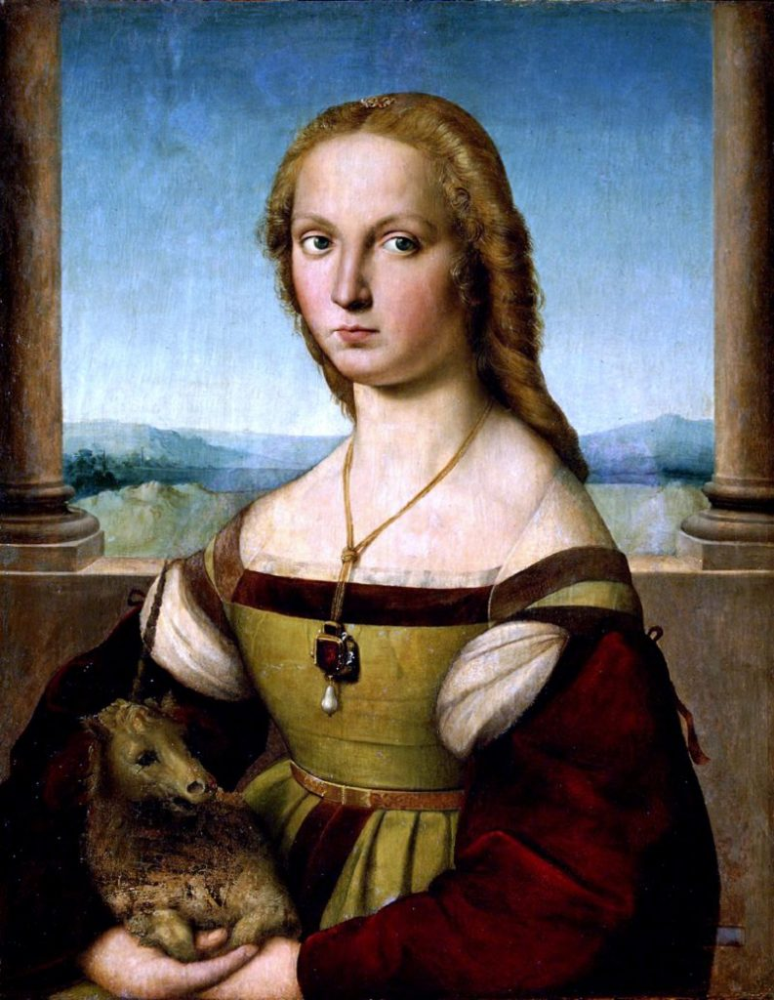

Raffaello Sanzio
Raffaello Sanzio nasce ad Urbino il 6 aprile 1483. Suo padre, Giovanni Santi, è un modesto pittore della corte di Urbino, un ambiente di grande cultura cosmopolita. Nel 1491 muore la madre Màgia ed il padre, poco tempo dopo, si risposa. Il 1° agosto 1494 muore anche il padre. Rimasto orfano a soli undici anni, Raffaello viene affidato allo zio sacerdote, Bartolomeo. Raffaello aveva già mostrato il suo talento, dato che Giorgio Vasari, suo contemporaneo, racconta che da bambino era stato di grande aiuto al padre nelle numerose opere che Giovanni eseguiva nello stato di Urbino. Ad Urbino Raffaello ha studiato le opere di Piero della Francesca e di Luciano Laurana ed ha iniziato a studiare il disegno e la prospettiva.
     